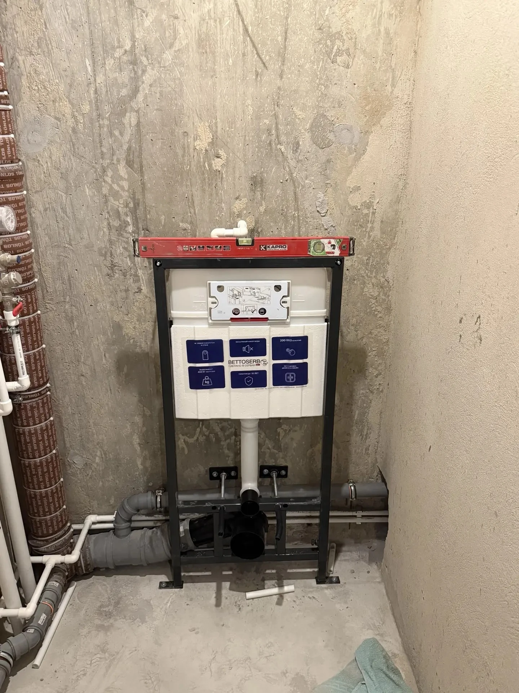
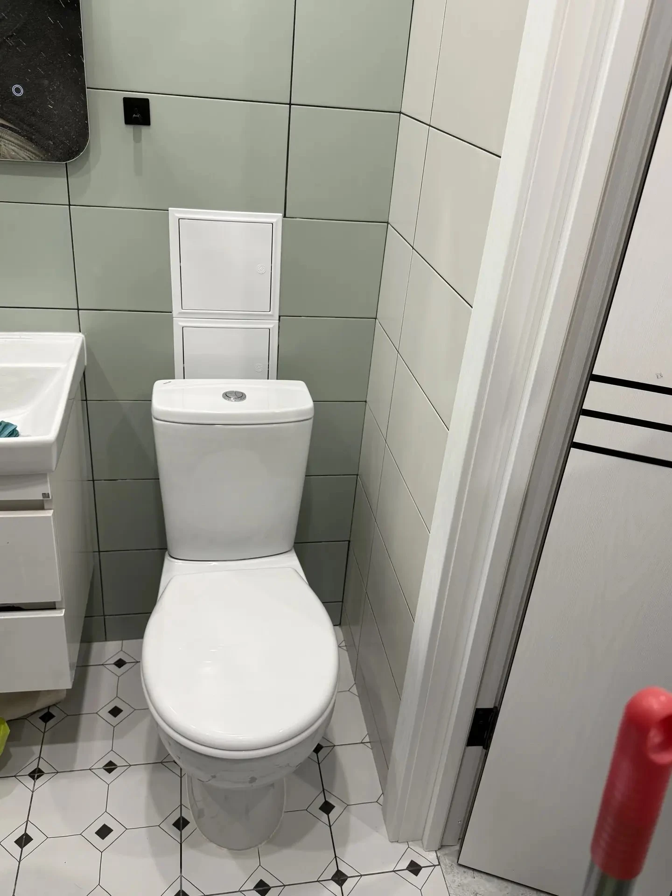

Монтаж, замена и демонтаж унитазов всех типов. Инсталляции GROHE, TECE, Geberit. Работаю аккуратно, с гарантией на герметичность.
Классический вариант. Простой монтаж, надёжная конструкция. Подходит для любых ванных комнат.
Современно, экономит место, легко мыть пол. Бачок спрятан в стене, снаружи только стильная кнопка смыва.
Компромисс: чаша стоит на полу, но бачок спрятан в стене или коробе. Выглядит аккуратно, монтаж проще полноценной инсталляции.
Функциональные модели с гигиеническим душем. Требуют подводки холодной и горячей воды.
Вы платите один раз — без скрытых доплат и «неожиданных» расходов:
Аккуратный демонтаж старого унитаза без повреждения плитки
Установка строго по уровню, надёжное крепление к полу или стене
Герметичное подключение к канализации и водоснабжению
Обработка стыков санитарным силиконом, тестовый слив воды
📍 Особенности установки в Воронеже: В старом фонде (Центральный, Железнодорожный районы) ванные комнаты часто узкие, а канализационные выпуски — чугунные. Для них я использую специальные эксцентриковые манжеты и переходники, чтобы надежно подключить новый унитаз без штробления пола. В новостройках (Левобережный, Московский проспект) часто уже есть ниши под инсталляции, но важно проверить качество гидроизоляции перед монтажом рамы. Работаю с любыми типами выпусков (горизонтальный, косой, вертикальный).
Реальная работа в Воронеже. Монтаж выполнен с соблюдением всех технических норм.

Установлена инсталляция BETTOSERB — надёжная система с гарантией 10 лет. Рама закреплена к полу и капитальной стене, выставлена строго по уровню. Выполнена подводка водоснабжения (белая труба сверху бачка) и подключение к канализации Ø110 мм (серая труба снизу). На бачке установлены шпильки для крепления чаши унитаза. Система проверена на герметичность — протечек нет. Инсталляция готова к обшивке гипсокартоном и чистовой отделке. Работа выполнена в новостройке, подготовка под монтаж подвесного унитаза.

Установлен напольный унитаз с компактными размерами — идеальное решение для небольшой ванной комнаты. Унитаз закреплён к полу, подключён к канализации и водоснабжению. Унитаз установлен строго по уровню, все стыки обработаны санитарным силиконом для защиты от влаги и плесени. Бачок оснащён двухрежимной кнопкой смыва для экономии воды. Работа выполнена под ключ в отремонтированной ванной комнате. Клиент получил полностью готовый к использованию санузел.
Эти ошибки я вижу чаще всего. Они приводят к протечкам, запахам и поломкам:
Рама должна держаться на капитальной стене или полу. Гипсокартон не выдержит нагрузку в 200-400 кг. Если стена слабая, нужны специальные телескопические упоры.
Некоторые «мастера» сажают унитаз на цемент. Это варварский метод: при замене унитаз придётся разбивать, а фаянс может треснуть от напряжения. Используйте качественные дюбели или санитарный силикон.
Для трубы 110 мм уклон должен быть 2 см на 1 погонный метр. Если сделать меньше — будут засоры, если больше — вода будет уходить слишком быстро, оставляя твёрдые фракции в трубе.
Установка напольного унитаза — от 5 000 ₽, монтаж инсталляции с подвесным унитазом — от 8 000 ₽. В стоимость входит демонтаж старого, установка нового, подключение к канализации и водоснабжению. Точная цена — после осмотра.
Инсталляция экономит место, выглядит современно, облегчает уборку. Но стоит дороже и сложнее в монтаже. Для маленьких ванных инсталляция — идеальный вариант. Для просторных — можно поставить классический напольный. Помогу выбрать под вашу ситуацию.
Работаю с проверенными брендами: GROHE, TECE, Geberit, Viega. Все они надёжные, с гарантией от производителя. Помогу подобрать оптимальную модель под ваш бюджет и размеры ванной.
Установка напольного унитаза — 1-2 часа. Монтаж инсталляции — 3-5 часов (без обшивки гипсокартоном). Если нужна обшивка и плитка — это отдельная работа, обычно её делают отделочники.
Да, устанавливаю унитазы с функцией биде. Нужно подвести холодную и горячую воду. Если рядом нет горячей — можно подключить к бойлеру или установить электрическую бидетку. Помогу с подключением.
Работаю по всему городу. Среднее время приезда — 30 - 90 минут.
Позвоните — проконсультирую по выбору модели и стоимости работ
📞 +7 (950) 754-25-49